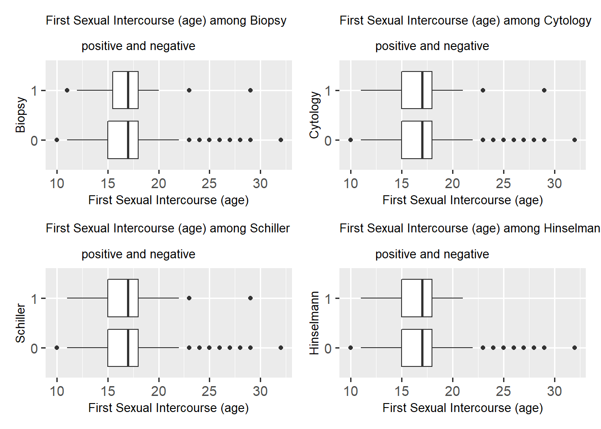
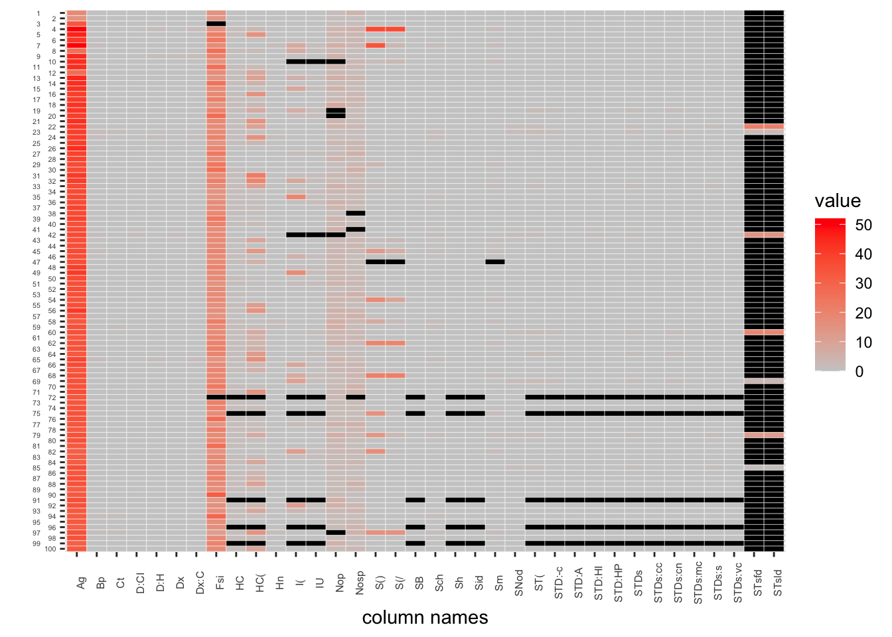

Chapter 4 Missing values
library(openintro)
library(tidyverse)
library(ggplot2)
library(GGally)
library(ggalluvial)
library(dplyr)
library(tidyverse)
library(patchwork)4.1 DataSet
In our data set of risk factors of cervical cancer, the missing values were original represented by question marks “?”. We will first replace those marks with NA and then extract the first 100 rows as our example for this frist draft.
df <- read_csv("risk_factors_cervical_cancer.csv", show_col_types = FALSE)
df <- df %>% na_if('?')
ex <- head(df, 100)
ex <- as.data.frame(apply(ex, 2, as.numeric))4.2 Missing Values by Column
colSums(is.na(ex)) %>%sort(decreasing = TRUE)## STDs: Time since first diagnosis STDs: Time since last diagnosis
## 93 93
## IUD IUD (years)
## 7 7
## Num of pregnancies Hormonal Contraceptives
## 5 5
## Hormonal Contraceptives (years) STDs
## 5 5
## STDs (number) STDs:condylomatosis
## 5 5
## STDs:cervical condylomatosis STDs:vaginal condylomatosis
## 5 5
## STDs:vulvo-perineal condylomatosis STDs:syphilis
## 5 5
## STDs:pelvic inflammatory disease STDs:genital herpes
## 5 5
## STDs:molluscum contagiosum STDs:AIDS
## 5 5
## STDs:HIV STDs:Hepatitis B
## 5 5
## STDs:HPV Number of sexual partners
## 5 3
## First sexual intercourse Smokes
## 2 1
## Smokes (years) Smokes (packs/year)
## 1 1
## Age STDs: Number of diagnosis
## 0 0
## Dx:Cancer Dx:CIN
## 0 0
## Dx:HPV Dx
## 0 0
## Hinselmann Schiller
## 0 0
## Citology Biopsy
## 0 04.3 Missing Value Plots
Here is a missing value plots with heat map of the first 100 data rows.
library(mi)
datasetdf <- as.data.frame(ex)
x <- missing_data.frame(datasetdf)## NOTE: The following pairs of variables appear to have the same missingness pattern.
## Please verify whether they are in fact logically distinct variables.
## [,1] [,2]
## [1,] "Smokes" "Smokes (years)"
## [2,] "Smokes" "Smokes (packs/year)"
## [3,] "Smokes (years)" "Smokes (packs/year)"
## [4,] "Hormonal Contraceptives" "Hormonal Contraceptives (years)"
## [5,] "Hormonal Contraceptives" "STDs"
## [6,] "Hormonal Contraceptives" "STDs (number)"
## [7,] "Hormonal Contraceptives" "STDs:condylomatosis"
## [8,] "Hormonal Contraceptives" "STDs:cervical condylomatosis"
## [9,] "Hormonal Contraceptives" "STDs:vaginal condylomatosis"
## [10,] "Hormonal Contraceptives" "STDs:vulvo-perineal condylomatosis"
## [11,] "Hormonal Contraceptives" "STDs:syphilis"
## [12,] "Hormonal Contraceptives" "STDs:pelvic inflammatory disease"
## [13,] "Hormonal Contraceptives" "STDs:genital herpes"
## [14,] "Hormonal Contraceptives" "STDs:molluscum contagiosum"
## [15,] "Hormonal Contraceptives" "STDs:AIDS"
## [16,] "Hormonal Contraceptives" "STDs:HIV"
## [17,] "Hormonal Contraceptives" "STDs:Hepatitis B"
## [18,] "Hormonal Contraceptives" "STDs:HPV"
## [19,] "Hormonal Contraceptives (years)" "STDs"
## [20,] "Hormonal Contraceptives (years)" "STDs (number)"
## [21,] "Hormonal Contraceptives (years)" "STDs:condylomatosis"
## [22,] "Hormonal Contraceptives (years)" "STDs:cervical condylomatosis"
## [23,] "Hormonal Contraceptives (years)" "STDs:vaginal condylomatosis"
## [24,] "Hormonal Contraceptives (years)" "STDs:vulvo-perineal condylomatosis"
## [25,] "Hormonal Contraceptives (years)" "STDs:syphilis"
## [26,] "Hormonal Contraceptives (years)" "STDs:pelvic inflammatory disease"
## [27,] "Hormonal Contraceptives (years)" "STDs:genital herpes"
## [28,] "Hormonal Contraceptives (years)" "STDs:molluscum contagiosum"
## [29,] "Hormonal Contraceptives (years)" "STDs:AIDS"
## [30,] "Hormonal Contraceptives (years)" "STDs:HIV"
## [31,] "Hormonal Contraceptives (years)" "STDs:Hepatitis B"
## [32,] "Hormonal Contraceptives (years)" "STDs:HPV"
## [33,] "IUD" "IUD (years)"
## [34,] "STDs" "STDs (number)"
## [35,] "STDs" "STDs:condylomatosis"
## [36,] "STDs" "STDs:cervical condylomatosis"
## [37,] "STDs" "STDs:vaginal condylomatosis"
## [38,] "STDs" "STDs:vulvo-perineal condylomatosis"
## [39,] "STDs" "STDs:syphilis"
## [40,] "STDs" "STDs:pelvic inflammatory disease"
## [41,] "STDs" "STDs:genital herpes"
## [42,] "STDs" "STDs:molluscum contagiosum"
## [43,] "STDs" "STDs:AIDS"
## [44,] "STDs" "STDs:HIV"
## [45,] "STDs" "STDs:Hepatitis B"
## [46,] "STDs" "STDs:HPV"
## [47,] "STDs (number)" "STDs:condylomatosis"
## [48,] "STDs (number)" "STDs:cervical condylomatosis"
## [49,] "STDs (number)" "STDs:vaginal condylomatosis"
## [50,] "STDs (number)" "STDs:vulvo-perineal condylomatosis"
## [51,] "STDs (number)" "STDs:syphilis"
## [52,] "STDs (number)" "STDs:pelvic inflammatory disease"
## [53,] "STDs (number)" "STDs:genital herpes"
## [54,] "STDs (number)" "STDs:molluscum contagiosum"
## [55,] "STDs (number)" "STDs:AIDS"
## [56,] "STDs (number)" "STDs:HIV"
## [57,] "STDs (number)" "STDs:Hepatitis B"
## [58,] "STDs (number)" "STDs:HPV"
## [59,] "STDs:condylomatosis" "STDs:cervical condylomatosis"
## [60,] "STDs:condylomatosis" "STDs:vaginal condylomatosis"
## [61,] "STDs:condylomatosis" "STDs:vulvo-perineal condylomatosis"
## [62,] "STDs:condylomatosis" "STDs:syphilis"
## [63,] "STDs:condylomatosis" "STDs:pelvic inflammatory disease"
## [64,] "STDs:condylomatosis" "STDs:genital herpes"
## [65,] "STDs:condylomatosis" "STDs:molluscum contagiosum"
## [66,] "STDs:condylomatosis" "STDs:AIDS"
## [67,] "STDs:condylomatosis" "STDs:HIV"
## [68,] "STDs:condylomatosis" "STDs:Hepatitis B"
## [69,] "STDs:condylomatosis" "STDs:HPV"
## [70,] "STDs:cervical condylomatosis" "STDs:vaginal condylomatosis"
## [71,] "STDs:cervical condylomatosis" "STDs:vulvo-perineal condylomatosis"
## [72,] "STDs:cervical condylomatosis" "STDs:syphilis"
## [73,] "STDs:cervical condylomatosis" "STDs:pelvic inflammatory disease"
## [74,] "STDs:cervical condylomatosis" "STDs:genital herpes"
## [75,] "STDs:cervical condylomatosis" "STDs:molluscum contagiosum"
## [76,] "STDs:cervical condylomatosis" "STDs:AIDS"
## [77,] "STDs:cervical condylomatosis" "STDs:HIV"
## [78,] "STDs:cervical condylomatosis" "STDs:Hepatitis B"
## [79,] "STDs:cervical condylomatosis" "STDs:HPV"
## [80,] "STDs:vaginal condylomatosis" "STDs:vulvo-perineal condylomatosis"
## [81,] "STDs:vaginal condylomatosis" "STDs:syphilis"
## [82,] "STDs:vaginal condylomatosis" "STDs:pelvic inflammatory disease"
## [83,] "STDs:vaginal condylomatosis" "STDs:genital herpes"
## [84,] "STDs:vaginal condylomatosis" "STDs:molluscum contagiosum"
## [85,] "STDs:vaginal condylomatosis" "STDs:AIDS"
## [86,] "STDs:vaginal condylomatosis" "STDs:HIV"
## [87,] "STDs:vaginal condylomatosis" "STDs:Hepatitis B"
## [88,] "STDs:vaginal condylomatosis" "STDs:HPV"
## [89,] "STDs:vulvo-perineal condylomatosis" "STDs:syphilis"
## [90,] "STDs:vulvo-perineal condylomatosis" "STDs:pelvic inflammatory disease"
## [91,] "STDs:vulvo-perineal condylomatosis" "STDs:genital herpes"
## [92,] "STDs:vulvo-perineal condylomatosis" "STDs:molluscum contagiosum"
## [93,] "STDs:vulvo-perineal condylomatosis" "STDs:AIDS"
## [94,] "STDs:vulvo-perineal condylomatosis" "STDs:HIV"
## [95,] "STDs:vulvo-perineal condylomatosis" "STDs:Hepatitis B"
## [96,] "STDs:vulvo-perineal condylomatosis" "STDs:HPV"
## [97,] "STDs:syphilis" "STDs:pelvic inflammatory disease"
## [98,] "STDs:syphilis" "STDs:genital herpes"
## [99,] "STDs:syphilis" "STDs:molluscum contagiosum"
## [100,] "STDs:syphilis" "STDs:AIDS"
## [101,] "STDs:syphilis" "STDs:HIV"
## [102,] "STDs:syphilis" "STDs:Hepatitis B"
## [103,] "STDs:syphilis" "STDs:HPV"
## [104,] "STDs:pelvic inflammatory disease" "STDs:genital herpes"
## [105,] "STDs:pelvic inflammatory disease" "STDs:molluscum contagiosum"
## [106,] "STDs:pelvic inflammatory disease" "STDs:AIDS"
## [107,] "STDs:pelvic inflammatory disease" "STDs:HIV"
## [108,] "STDs:pelvic inflammatory disease" "STDs:Hepatitis B"
## [109,] "STDs:pelvic inflammatory disease" "STDs:HPV"
## [110,] "STDs:genital herpes" "STDs:molluscum contagiosum"
## [111,] "STDs:genital herpes" "STDs:AIDS"
## [112,] "STDs:genital herpes" "STDs:HIV"
## [113,] "STDs:genital herpes" "STDs:Hepatitis B"
## [114,] "STDs:genital herpes" "STDs:HPV"
## [115,] "STDs:molluscum contagiosum" "STDs:AIDS"
## [116,] "STDs:molluscum contagiosum" "STDs:HIV"
## [117,] "STDs:molluscum contagiosum" "STDs:Hepatitis B"
## [118,] "STDs:molluscum contagiosum" "STDs:HPV"
## [119,] "STDs:AIDS" "STDs:HIV"
## [120,] "STDs:AIDS" "STDs:Hepatitis B"
## [121,] "STDs:AIDS" "STDs:HPV"
## [122,] "STDs:HIV" "STDs:Hepatitis B"
## [123,] "STDs:HIV" "STDs:HPV"
## [124,] "STDs:Hepatitis B" "STDs:HPV"image(x) Here is a missing value plots by variables of the first 100 data rows.
Here is a missing value plots by variables of the first 100 data rows.
tidyex <- ex %>%
rownames_to_column("id") %>%
gather(key, value, -id) %>%
mutate(missing = ifelse(is.na(value), "yes", "no"))
ggplot(tidyex, aes(x = key, y = fct_rev(id), fill = value)) +
geom_tile(color = "white") +
scale_fill_gradient(low = "grey80", high = "red", na.value = "black") + theme_bw()
4.4 Using Problem 2 missing value function
missing_plots = function(sample_data, percents){
missing_patterns <- data.frame(is.na(sample_data)) %>%
group_by_all() %>%
count(name = "count", sort = TRUE) %>%
ungroup() %>%
rownames_to_column("id")
missing_patterns = missing_patterns %>%
rowwise() %>%
mutate(complete = ifelse(sum(c_across(
names(missing_patterns)[! names(missing_patterns) %in%
c("count", "id")])) == 0, 1.1, 1))
complete_row = missing_patterns[missing_patterns$complete == 1.1, ]$id
if (percents){
missing_patterns = missing_patterns %>%
mutate(count = count / nrow(sample_data) * 100)
}
# gather
tidy_pattern = missing_patterns %>%
select(-count) %>%
gather(key, value, -c(id, complete))
# missing values by rows
missing_rows = colSums(is.na(sample_data)) %>%
sort(decreasing = TRUE)
miss_rows=data.frame(missing_rows)
miss_rows = miss_rows %>%
rownames_to_column("id")
if (percents){
miss_rows = miss_rows %>%
mutate(missing_rows = missing_rows/nrow(sample_data)*100)
}
# p1 is a plot of missing values by rows
p1 = ggplot(miss_rows,aes(x = reorder(id, -missing_rows),
y = missing_rows)) +
geom_col(fill = 'light blue') +
xlab('')
if (percents){
p1 = p1 + ylab('% rows\n missing') +
scale_y_continuous(limits = c(0,100))
}
else{
p1 = p1 + ylab('num rows\n missing')
}
# p3 is a plot of missing patterns by count
p3 = ggplot(missing_patterns, aes(x = count,
y = fct_reorder(id,
as.integer(id))))+
geom_col(fill = 'steelblue3', aes(alpha = complete)) +
ylab('') +
scale_y_discrete(limits=rev)+
scale_alpha(range = c(0.5, 1.0))+
theme(legend.position = "none")
if (percents){
p3 = p3 + xlab('% rows') +
scale_x_continuous(limits = c(0,100))
}
else{
p3 = p3 + xlab('row count')
}
# p2 is a plot of missing patterns by columns
p2 = ggplot(tidy_pattern, aes(x = fct_reorder(key, -value, sum), y = fct_rev(fct_reorder(id,as.integer(id))), fill = value)) +
geom_tile(color = "white", aes(alpha = complete)) +
scale_fill_manual(values=c("gray", "mediumpurple1")) +
xlab('variable') +
ylab('missing patterns')+
scale_alpha(range = c(0.5, 1.0))+
theme(legend.position = "none")
if (length(complete_row) != 0){
li = levels(fct_reorder(tidy_pattern$key, -tidy_pattern$value, sum))
p2 = p2 + annotate('text', x = li[as.integer(length(li)/2)],
y = complete_row, label = 'complete cases')
}
layout <- "
AAAA#
BBBBC
BBBBC
"
graphs = p1 + p2 + p3 +
plot_layout(design = layout)
return (graphs)
}missing_plots(ex, TRUE) As shown by the graph, we can see that both columns of name STDs: Time since first diagnosis and STDs: Time since last diagnosis contains a high number of missing data. We might need to looking into these two columns and decide whether to keep them given this high volume of NAs. Other missing values takes up some portion of each column.